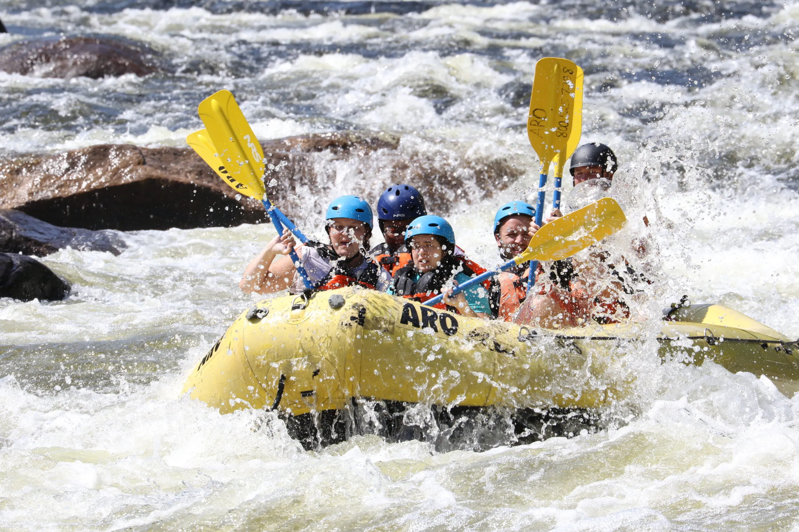
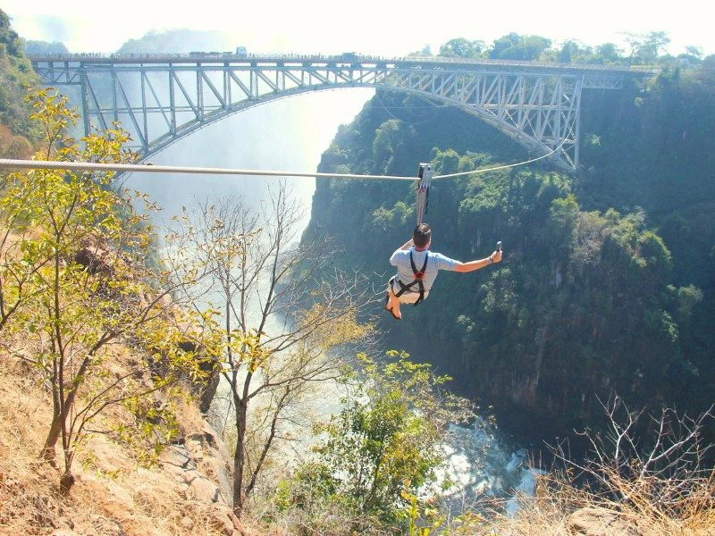
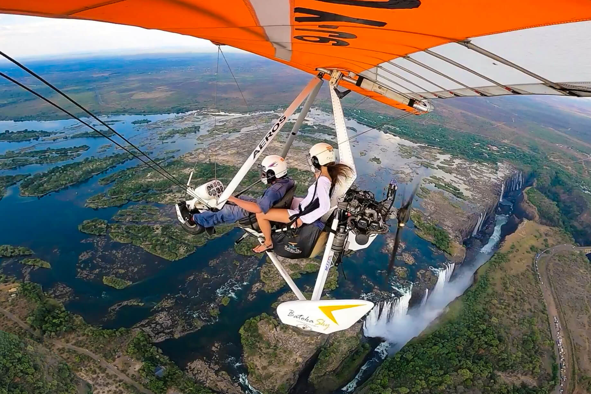
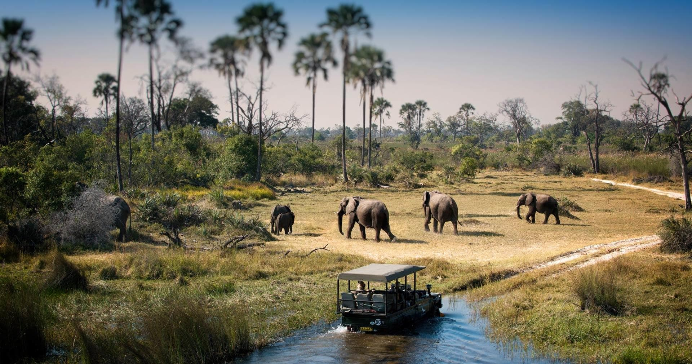
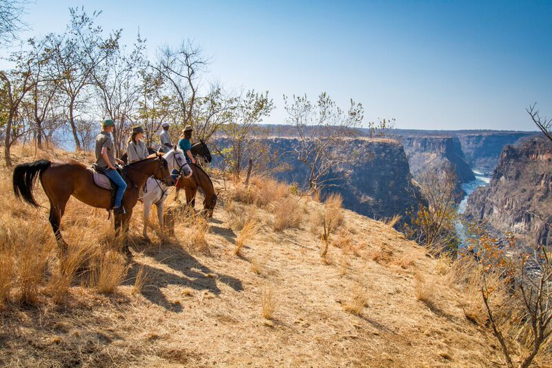
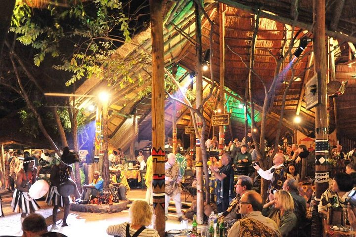
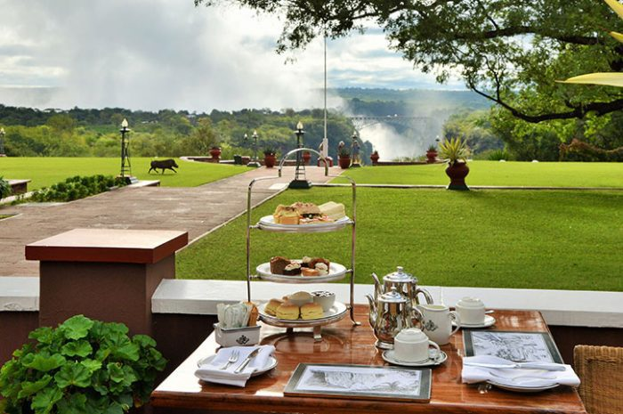
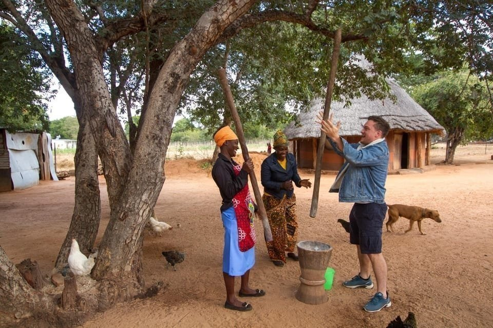

Complete Experience Guide
Things to Do at Victoria Falls
From high-altitude leaps and white-water rapids to scenic walks and cross-border safaris.

Navigate the powerful Grade V rapids of the Zambezi River through Batoka Gorge. Known globally as one of the ultimate one-day rafting runs.

Swim right at the precipice edge of the waterfall on Livingstone Island (Zambian side). Guided access during low-water conditions.

Paddle calm stretches of the upper river in two-person canoes, gliding past river islands and game drinking along the banks.

Leap 111 meters off the historic Victoria Falls Bridge into the gorge below with the cascading falls framing your backdrop.

Step off the rim for a 70m free-fall before swinging out over Batoka Gorge, or cable-slide high above the abyss on the Flying Fox.

Glide across deep chasms and through the hardwood forest canopy on a network of high cable slides and suspended walkways.

Take a 12- or 25-minute flight looping over the massive fall curtain and down through the winding basalt gorges.

Soar in an open-air light aircraft for unfiltered, wind-in-your-face aerial views and unique photographic angles of the spray.

Walk the paths of Victoria Falls National Park across 16 key viewpoints, getting immersed in localized mist and rainbows.

Spot elephants, rhinos, lions, and buffaloes on 4x4 open safari vehicle drives in Victoria Falls Private Game Reserve or Zambezi NP.

Cross into Botswana for a full-day adventure including a Chobe River safari cruise and afternoon 4x4 drive in elephant territory.

Ride through African teak forests and national park bushlands along the riverbanks, tracking wildlife silently on horseback.

An immersive evening featuring traditional buffet delicacies, local dancers, face painting, and interactive djembe drumming.

Savor tea, pastries, and sandwiches on Stanley's Terrace overlooking the historic Victoria Falls Bridge and spray plumes.

Meet local residents in nearby authentic rural villages or Chinotimba township to learn about regional customs, traditions, and history.